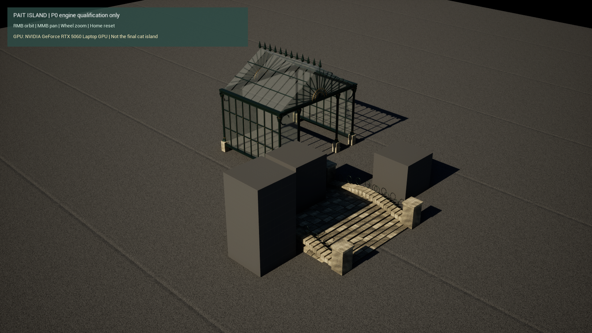

派特岛 · Windows 客户端
分支 codex/windows-client · 工程 native/windows/PaitIsland.uproject · 客户端骨架 0.1.0
当前状态
UE 5.8.3 安装完成，Editor 编译、Development/Shipping Cook 和打包通过，Shipping 已在 RTX 5060 上实际启动。安装器于 2026-10-17 13:46 完成最终校验；版本 CL 58210709。工具链为 VS 2022 17.14、MSVC 14.44、Windows SDK 10.0.26100.0。
已经导入温室和石桥的 7 个真实网格，修正了初次测试中的曝光过亮。当前仍为隔离 P0 测试场景，保留诊断方块；玻璃、天空环境光、骨骼动画、完整猫岛、5 分钟稳定性与真实帧率尚未验收。首个 Development 包曾成功运行，但最新曝光和资产版本还需重建复测。

上图是实际 Shipping 画面，1600×900、DX12/SM6；不是最终画质或性能成绩。截图与程序哈希、视觉检查和限制。
后端仍保留现有 Python 服务；P0/P1 只做隔离演示，没有生产账户、种植或经济写入。Blender 高精母版另行加工成运行资产。
构建与运行
在 native/windows 目录执行。Python 不在 PATH 时加 -PythonExe "C:\Users\17958\.conda\envs\qijin666\python.exe"。
powershell -File Scripts/Build-Client.ps1 -EngineRoot "D:\Epic Games\UE_5.8" -Mode Editor
powershell -File Scripts/Build-Client.ps1 -EngineRoot "D:\Epic Games\UE_5.8" -Mode CreateMap
powershell -File Scripts/Build-Client.ps1 -EngineRoot "D:\Epic Games\UE_5.8" -Mode ImportAsset
powershell -File Scripts/Build-Client.ps1 -EngineRoot "D:\Epic Games\UE_5.8" -Mode Package -Configuration Shipping
powershell -File Scripts/Test-ClientLaunch.ps1 -Executable "Saved/Packages/Shipping/PaitIsland/Binaries/Win64/PaitIsland-Win64-Shipping.exe" -Configuration Shipping
CreateMap 与 ImportAsset 拒绝覆盖已有工作，现有机器已完成这两步，无需重复执行。自动启动验证预热约 30 秒，保存实际截图与 JSON 后退出；它不测量性能。所有证据位于 Saved/Qualification，各次启动单独建目录。手动体验可运行包根目录 PaitIsland.exe，右键环绕、中键平移、滚轮缩放、Home 复位；完整手动输入验收尚未完成。
24GB 内存下，Blender 正式渲染与 UE 编译/Cook/实机测试交错执行，避免内存分页。生成资产、包和日志均保留本地，不提交用户数据。
猫咪岛新一轮细化
打开 V2 美术审查：全景、温室、陶盆和猫窝近景。本轮增加主岛草地层次、叶脉、陶盆与土壤细节、温室雨槽和连接件，保留原布局与 V1 母版。当前冻结的 P0 来源清单仍为 V1；V2 为离线候选资产，需要另外完成材质转换、LOD 和运行验证后再接入客户端。
资产与性能证据
猫岛来源清单固定了10个离线模块（430.7 MiB）、母版、报告与地形配置的 SHA256。文件仍在原项目 D:\PetChatSystem，新 worktree 不会复制被忽略的大资产；该清单不是运行时资产清单，未完成 LOD、材质转换、碰撞或导航。
python Tools/asset_inventory.py --source-project "D:\PetChatSystem" --output Saved/Qualification/meadow-source-inventory.json
python -m unittest discover -s Tools/Tests -v
python Tools/frame_report.py Saved/Qualification/run1.csv --metadata Saved/Qualification/run1.json --output Saved/Qualification/run1-report.json
性能工具只接受单次已规范化的实际渲染帧时间 CSV，列名 frame_ms。先从 PresentMon 原始记录按实际进程/捕获区间提取，保留原 CSV 和提取过程；不混合运行、不将编辑器 FPS、插帧/展示帧冒充渲染帧，也不自动悄悄删异常。元数据模板见 capture-metadata.example.json，必须用真实采样填写。CLI 校验原始文件哈希；规范化和进程过滤仍需人工复核。
输出仅可能表示“此轮帧时间门槛通过”，不表示整个客户端合格：实际平均≥60、p95≤18ms、p99≤25ms、>50ms占比<0.1%；>100ms、排除样本或证据不足必须复核。独立三轮、压力场景、画质、显存、两小时长测、输入延迟仍按完整方案另验收。工具单测中的人工数据不是真实性能成绩。
下一道门槛
重建最新 Development 并启动 → 透明材质/天空与六镜头检查 → 标准宠物骨骼动画 → 五分钟稳定性与运行时 UGC 独立 PoC。随后制作深绿/深木色 V2 猫岛 P1 样片，完成隔离交互和正式性能采样；未达标前不扩大生产功能迁移，不承诺 60 FPS。
完整迁移方案 · 开发进度 · 工具链与资格缺口
2026-10-17 · 只在客户端分支开发；未触碰运行中网页服务、账户或原始母版。